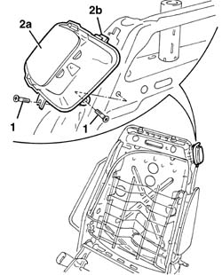
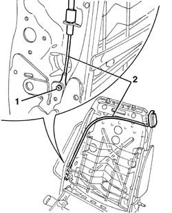

7045L30 BACKREST FOLDING CONTROL CABLE/ROD - R.R.
- Path
- Procedures > 70 FITTINGS > 7045 FRONT SEATS > 7045L MANUAL MOVEMENT OF ELECTRIC FRONT SEATS > 7045L30 BACKREST FOLDING CONTROL CABLE/ROD - R.R.
- Kind
- repair procedure (removal / refitting; the operation number is the code)
- Applies to
- all engines; all production periods
- Interactive page
- https://sloeber94.github.io/elrnDB-aGt/en/#/125001930
Applies to: all engines; all production periods
 Removing
Removing
 Refitting
RefittingOp. 7045A10 L/H OR R/H FRONT SEAT (ONE) - R+R
Op. 7045A25 SQUAB LUMBAR KNOB - R R
Op. 7045A43 SEAT EXTERIOR GUARD - R R
Op. 7045A44 SEAT INTERIOR GUARD - R R
- 7045A98 front seat rear pouch panel, lh or rh - r r
Op. 7045A84 R R HANDLE FOR FRONT SEAT FORE AND AFT ADJUSTMENT
1. Undo the control lever fixing bolts.
2. Move the control lever (2a), releasing the retainer (2b) from the metal structure.

Applies to: all engines; all production periods
1. Remove the rivet fastening the end of the cable using a drill.
2. Remove the control cable and lever.

Applies to: all engines; all production periods
Refitting
RemovingCheck that the control cable and lever are intact and there are no signs of damage.
Place the control cable and lever in position.
Fit the rivet fastening the end of the cable.
Position the control lever attaching the retainer to the metal structure, then fasten it using the bolts.
Op. 7045A84 R R HANDLE FOR FRONT SEAT FORE AND AFT ADJUSTMENT
- 7045A98 front seat rear pouch panel, lh or rh - r r
Op. 7045A44 SEAT INTERIOR GUARD - R R
Op. 7045A43 SEAT EXTERIOR GUARD - R R